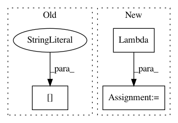

59266e34e076ed25852bccf5ce13025b5408406f,stellargraph/layer/gcn.py,GCN,__call__,#GCN#Any#,262
Before Change
Output tensor
H = x[0]
extra_in = x[1:]
for layer in self._layers:
if isinstance(layer, GraphConvolution):
// It is a GCN layer add the extra inputs
After Change
// Otherwise, create dense matrix from input tensor
else:
Ainput = Lambda(lambda A: K.squeeze(A, 0))(As[0])
// Remove singleton batch dimension
h_layer = x_in
for layer in self._layers:
In pattern: SUPERPATTERN
Frequency: 3
Non-data size: 3
Instances
Project Name: stellargraph/stellargraph
Commit Name: 59266e34e076ed25852bccf5ce13025b5408406f
Time: 2019-05-28
Author: andrew.docherty@data61.csiro.au
File Name: stellargraph/layer/gcn.py
Class Name: GCN
Method Name: __call__
Project Name: stellargraph/stellargraph
Commit Name: ce597a0b10658043b6d6d8ffed3fff4a6ebbc1ea
Time: 2019-09-26
Author: u5824685@anu.edu.au
File Name: stellargraph/layer/ppnp.py
Class Name: PPNP
Method Name: __call__
Project Name: nerox8664/pytorch2keras
Commit Name: 97230cfa56515f3e08f7dbf44c96b5f21de2cc17
Time: 2018-11-24
Author: nerox8664@gmail.com
File Name: pytorch2keras/layers.py
Class Name:
Method Name: convert_reshape